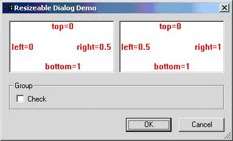

Oh no, yet another resizable dialog class! This is what you might think, but I have looked at several solutions for resizable dialogs, but neither of them met my requirements; so like all the others, I decided to make my own class. Some of the advantages in this solution:
The solution is not a CDialog derived class, but a generic class (CResize) that can be used in other situations as well. It is applied to the dialog (CResizeDialog), property page and sheet (CResizePropertyPage and CResizePropertySheet), and form view (CResizeFormView) classes. The demo project shows how to use the class in these four situations. Notice that the property sheet demo shows how to include minimize and maximize buttons.
Throughout the remaining part of this document, I will assume that the control is applied to a dialog class.
The resize paradigm is to specify how much each side of a control will move when the dialog is resized. If a control should be repositioned (e.g. an OK button) then all four sides should move with the same amount of pixels as the dialog is resized. If a control should be resized just as much as the dialog (e.g. the list control in the file dialog), then the left and top sides shouldn't move, and the right and bottom sides should move with the same amount of pixels as the dialog.
In this example the added horizontal size should be split between the two edit boxes, and the added vertical size should be consumed by the two edit controls. The sides of the edit controls move as shown on the image.

The sizing for the two edit controls can be set in these four different, but functional equal, ways:
// sizing set using array of items
static SIZING s_arrSizing[] =
{
// identifier left top right bottom
IDC_EDIT1, 0, 0, 0.5, 1,
IDC_EDIT2, 0.5, 0, 1, 1
};
SetResize(s_arrSizing);
// sizing set directly with functions
SetResize(IDC_EDIT1, 0, 0, 0.5, 1);
SetResize(IDC_EDIT2, 0.5, 0, 1, 1);
// sizing set with functions using added macros
SetResize(IDC_EDIT1, SZ_HORRESIZE(0.5) + SZ_VERRESIZE(1));
SetResize(IDC_EDIT2, SZ_HORRESIZE(0.5) + SZ_HORREPOS(0.5) + SZ_VERRESIZE(1));
// sizing set with multiple functions using macros
SetResize(IDC_EDIT1, SZ_HORRESIZE(0.5));
SetResize(IDC_EDIT1, SZ_VERRESIZE(1));
SetResize(IDC_EDIT2, SZ_HORRESIZE(0.5));
SetResize(IDC_EDIT2, SZ_HORREPOS(0.5));
SetResize(IDC_EDIT2, SZ_VERRESIZE(1));
The available macros for the definitions are:
SZ_RESIZE(x) // resize
SZ_REPOS(x) // reposition
SZ_HORRESIZE(x) // horizontal resize
SZ_HORREPOS(x) // horizontal reposition
SZ_VERRESIZE(x) // vertical resize
SZ_VERREPOS(x) // vertical reposition
The values of x must be in the range [0,1], which is verified with assertions.
Notice that the only thing you have to do to implement a resizable dialog, is to derived your own dialog class from CResizeDialog instead of CDialog, and set the sizing options as shown above.
The windows style WS_CLIPCHILDREN needs to be set to prevent the dialog from flickering. This causes a problem for group boxes (wrong window painting in the area of the group box), but that can be solved by making the group boxes transparent (they still flicker though). The CResize class automatically sets the WS_CLIPCHILDREN style for the dialog and the WS_EX_TRANSPARENT extended style for the group boxes to cope with these problems (this can be disabled by setting the corresponding flags, see the next section).
Notice that the tabs of the property pages still flicker, I haven't found a way to solve that (yet).
The following flags are defined to control the behavior:
SZ_NOSIZEICON // do not add size icon
SZ_NOHORISONTAL // no horizontal resizing
SZ_NOVERTICAL // no vertical resizing
SZ_NOMINSIZE // do not require a minimum size
SZ_NOCLIPCHILDREN // do not set clip children style
SZ_NOTRANSPARENTGROUP // do not set transparent style for group boxes
The flags are set through the last argument of the constructors.
The default minimum size is the initial size of the dialog, which can be overruled by the flag SZ_NOMINSIZE or by setting the size explicitly with the function SetMinSize. You can set a maximum size as well.
void SetMinSize(CSize& sz); // set the minimum size explicitly (initial size is the default)
void SetMaxSize(CSize& sz); // set the maximum (no maximum as default)
The size of the dialog can be saved to and loaded from the registry, which is shown for the demo dialog in the demo project.
void SavePlacement(LPCTSTR pszSection); // save window placement to registry
void LoadPlacement(LPCTSTR pszSection); // load saved window placement from registry